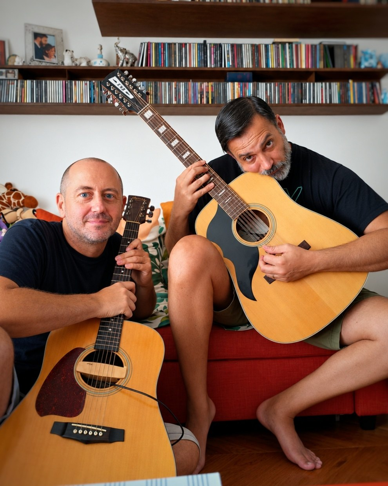
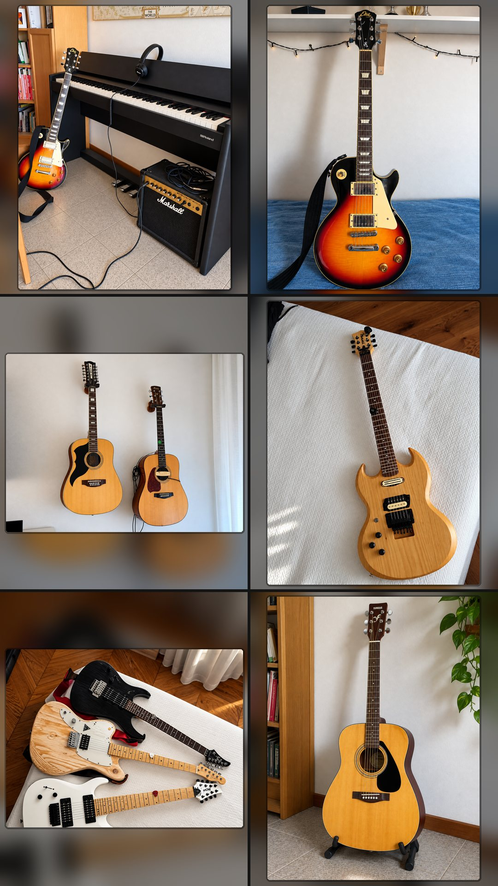

1. Musical instruments
Our production process incorporates real instruments, original recordings, MIDI programming and virtual instruments.
Fenni's instruments
- Yamaha RGX421 electric guitar.
- Harley Benton 8-string guitar.
- Jadine, an SG-style guitar made in Finland by Kiiras Guitars.
- Dine All Gig Headless guitar.
- Eko Ranger 12-string acoustic guitar.
- Ibanez acoustic guitar.
Fenni's guitars are left-handed.
FX's instruments
- Eko VL-480 sunburst electric guitar.
- Yamaha FG310 acoustic guitar.
- Hohner Blues Harp harmonica in F.
- Roland F-107 digital piano.
- Yamaha PSR-400 keyboard.
2. Recording equipment and studio setup
Our recording equipment and production environment have evolved from analogue recording to computer-based audio production.
The equipment used throughout our workflow includes:
- Cassette recorders and MC tapes.
- Focusrite Scarlett 2i2 USB-C audio interface (2 in / 2 out).
- Behringer U-PHORIA UMC204HD USB audio/MIDI interface (2 in / 4 out, 24-bit/192 kHz) with Midas microphone preamplifiers.
The specific setup varies according to the song and the production stage.
Multi-effects processor
Zoom GFX-707 Guitar Effects Processor — a digital multi-effects unit used for guitar sound processing.
Pedalboard
Our pedalboard includes:
- BOSS DS-1 Distortion — distortion.
- BOSS OC-3 Super Octave — octave effects.
- BOSS CS-3 Compression Sustainer — compression and sustain.
- Electro-Harmonix Hum Debugger — hum reduction.
- TC Electronic TRIO+ — rhythm and bass accompaniment generation.
- VOX wah-wah pedal — pedal-controlled filter effects.
The pedalboard combines tone shaping, dynamics, distortion, pitch effects and other processing options for electric guitar.
3. Software, MIDI and audio production
3.1 MIDI, audio and virtual instruments
Cubase — MIDI and audio integration
Cubase is used to integrate MIDI and audio in our production workflow. It allows us to work with MIDI input devices, including keyboards such as the Yamaha PSR-400, and to develop musical arrangements involving virtual instruments and recorded audio.
MIDI allows musical performances and note information to be recorded, edited and used to control compatible instruments and software. It is distinct from the audio signal itself.
Yamaha PSR-400 — MIDI keyboard
FX has used the Yamaha PSR-400 to enter MIDI information and develop arrangements involving additional instruments, connecting the keyboard to the computer-based production setup through the appropriate MIDI and audio connections.
Virtual instruments and manual programming
Virtual instruments are used where appropriate to develop instrumental arrangements. Bass and drum parts can be programmed manually, with the notes and rhythms determined by us by ear rather than simply relying on pre-existing sampled performances.
3.2 Audio recording and multitrack production
Adobe Audition — earlier workflow
Adobe Audition was used in our earlier home-studio workflow for audio editing and processing.
Ardour — current multitrack workflow
Ardour is our current environment for multitrack recording and audio production. It allows us to record, organize and manage multiple audio tracks within the same project.
3.3 Composition, tablature and notation software
Guitar Pro
Used to develop guitar tablatures, document musical parts and work on instrumental arrangements. It has also supported the manual development of bass and drum parts.
TuxGuitar
Used for guitar tablature and the development of instrumental parts.
MuseScore Studio 4
Used for music notation and score preparation.
These tools support the development and documentation of musical ideas before and during recording.
3.4 Audio processing and sound design
Waves Central
Used to manage Waves audio software and plugins.
Native Instruments Reaktor 6
A modular sound-design environment available for sound experimentation and electronic audio processing.
Moises
Used for audio-analysis and music-separation tasks where appropriate.
These tools form part of our broader audio and music-production toolkit. Their use depends on the requirements of individual projects.
4. Original recordings, samples and demos
Original recordings and samples
Original recordings are an important component of our production process.
Guitar sounds can be derived from samples recorded using our own real guitars. Some vocal elements are based on samples of our own voices. We also record instrumental performances, including acoustic guitar, as part of the development of our musical material.
These recordings originate in our own work and can be incorporated into arrangements and subsequent production stages.
Complete demos and pre-production
Before generative AI is introduced, we write, arrange and record complete demos of our songs.
The demos establish the composition, lyrics, structure, instrumental arrangements and intended artistic direction. They provide the reference against which subsequent production results are evaluated.
The musical material therefore exists as a developed composition and arrangement before the AI-assisted production stage begins.
5. Generative AI and sonic and vocal rendition
Suno — AI-assisted production
In our own workflow, we have used Suno to generate sonic and vocal renditions of our completed demos.
The aim is to explore different sonic characteristics, instrumental textures, vocal interpretations and production styles while retaining the identity of the original compositions.
Generated versions are compared with the original demos. We evaluate their fidelity to the intended composition, arrangement and artistic direction, selecting the versions that best reflect our creative intentions.
The results are not automatically accepted. Listening, comparison, selection and further artistic and technical checks remain integral to the process.
Other AI tools
Our broader creative and technical toolkit also includes Google Flow, ChatGPT, Gemini, Claude AI and Perplexity AI. These tools support different activities in our wider workflow and are not necessarily involved in generating the audio of our songs.
6. Final checks and delivery
After selecting a suitable version, we carry out further artistic and technical checks before preparing the final master.
The finished audio is delivered to Symphonic in a lossless WAV or FLAC format, according to the applicable delivery requirements, for distribution to digital platforms.
Human-composed. Human-arranged. AI-rendered.
Our technical workflow combines original instruments and recordings, MIDI programming, digital audio production and generative AI. The AI-assisted stage follows the completion of our human-created compositions and arrangements, while the selection of the final versions remains guided by our artistic judgement.


1. Strumenti musicali
Il nostro processo di produzione comprende strumenti reali, registrazioni originali, programmazione MIDI e strumenti virtuali.
Gli strumenti di Fenni
- Chitarra elettrica Yamaha RGX421.
- Chitarra a 8 corde Harley Benton.
- Jadine, chitarra in stile SG costruita in Finlandia da Kiiras Guitars.
- Chitarra headless Dine All Gig.
- Chitarra acustica a 12 corde Eko Ranger.
- Chitarra acustica Ibanez.
Le chitarre di Fenni sono per mancini.
Gli strumenti di FX
- Chitarra elettrica Eko VL-480 sunburst.
- Chitarra acustica Yamaha FG310.
- Armonica Hohner Blues Harp in Fa.
- Pianoforte digitale Roland F-107.
- Tastiera Yamaha PSR-400.
2. Attrezzatura di registrazione e studio
La nostra attrezzatura di registrazione e il nostro ambiente di produzione si sono evoluti dalla registrazione analogica alla produzione audio al computer.
L'attrezzatura usata nel nostro flusso di lavoro comprende:
- Registratori a cassetta e musicassette.
- Interfaccia audio USB-C Focusrite Scarlett 2i2 (2 in / 2 out).
- Interfaccia audio/MIDI USB Behringer U-PHORIA UMC204HD (2 in / 4 out, 24 bit/192 kHz) con preamplificatori microfonici Midas.
La configurazione specifica varia a seconda del brano e della fase di produzione.
Processore multieffetto
Zoom GFX-707 Guitar Effects Processor — unità multieffetto digitale usata per l'elaborazione del suono della chitarra.
Pedaliera
La nostra pedaliera comprende:
- BOSS DS-1 Distortion — distorsione.
- BOSS OC-3 Super Octave — effetti di ottava.
- BOSS CS-3 Compression Sustainer — compressione e sustain.
- Electro-Harmonix Hum Debugger — riduzione del ronzio.
- TC Electronic TRIO+ — generazione di accompagnamento ritmico e di basso.
- Pedale wah-wah VOX — effetti di filtro controllati a pedale.
La pedaliera combina modellazione del timbro, dinamica, distorsione, effetti di intonazione e altre opzioni di elaborazione per chitarra elettrica.
3. Software, MIDI e produzione audio
3.1 MIDI, audio e strumenti virtuali
Cubase — integrazione di MIDI e audio
Cubase viene usato per integrare MIDI e audio nel nostro flusso di produzione. Permette di lavorare con dispositivi di input MIDI, comprese tastiere come la Yamaha PSR-400, e di sviluppare arrangiamenti musicali con strumenti virtuali e audio registrato.
Il MIDI permette di registrare, modificare e usare esecuzioni musicali e informazioni sulle note per controllare strumenti e software compatibili. È distinto dal segnale audio vero e proprio.
Yamaha PSR-400 — tastiera MIDI
FX ha usato la Yamaha PSR-400 per inserire informazioni MIDI e sviluppare arrangiamenti con strumenti aggiuntivi, collegando la tastiera al sistema di produzione al computer con le opportune connessioni MIDI e audio.
Strumenti virtuali e programmazione manuale
Gli strumenti virtuali vengono usati, dove opportuno, per sviluppare gli arrangiamenti strumentali. Le parti di basso e batteria possono essere programmate a mano, con note e ritmi stabiliti da noi a orecchio, senza limitarsi a usare esecuzioni campionate già esistenti.
3.2 Registrazione audio e produzione multitraccia
Adobe Audition — il flusso di lavoro precedente
Adobe Audition è stato usato nel nostro precedente home studio per l'editing e l'elaborazione audio.
Ardour — il flusso multitraccia attuale
Ardour è il nostro ambiente attuale per la registrazione multitraccia e la produzione audio. Permette di registrare, organizzare e gestire più tracce audio all'interno dello stesso progetto.
3.3 Software di composizione, tablatura e notazione
Guitar Pro
Usato per sviluppare tablature di chitarra, documentare le parti musicali e lavorare sugli arrangiamenti strumentali. Ha anche supportato lo sviluppo manuale delle parti di basso e batteria.
TuxGuitar
Usato per le tablature di chitarra e lo sviluppo di parti strumentali.
MuseScore Studio 4
Usato per la notazione musicale e la preparazione delle partiture.
Questi strumenti supportano lo sviluppo e la documentazione delle idee musicali prima e durante la registrazione.
3.4 Elaborazione audio e sound design
Waves Central
Usato per gestire il software e i plugin audio Waves.
Native Instruments Reaktor 6
Un ambiente modulare di sound design, disponibile per la sperimentazione sonora e l'elaborazione audio elettronica.
Moises
Usato, dove opportuno, per attività di analisi audio e separazione delle tracce musicali.
Questi strumenti fanno parte del nostro più ampio set di strumenti per l'audio e la produzione musicale. Il loro uso dipende dalle esigenze dei singoli progetti.
4. Registrazioni originali, campioni e demo
Registrazioni originali e campioni
Le registrazioni originali sono una componente importante del nostro processo di produzione.
I suoni di chitarra possono derivare da campioni registrati con le nostre chitarre reali. Alcuni elementi vocali sono basati su campioni delle nostre stesse voci. Registriamo anche esecuzioni strumentali, compresa la chitarra acustica, nell'ambito dello sviluppo del nostro materiale musicale.
Queste registrazioni nascono dal nostro lavoro e possono essere inserite negli arrangiamenti e nelle fasi successive di produzione.
Demo complete e pre-produzione
Prima di introdurre l'IA generativa, scriviamo, arrangiamo e registriamo demo complete delle nostre canzoni.
Le demo stabiliscono la composizione, il testo, la struttura, gli arrangiamenti strumentali e la direzione artistica voluta. Costituiscono il riferimento rispetto al quale vengono valutati i risultati delle fasi di produzione successive.
Il materiale musicale esiste quindi come composizione e arrangiamento già sviluppati prima che inizi la fase di produzione assistita dall'IA.
5. IA generativa e resa sonora e vocale
Suno — produzione assistita dall'IA
Nel nostro flusso di lavoro abbiamo usato Suno per generare rese sonore e vocali delle nostre demo complete.
L'obiettivo è esplorare diverse caratteristiche sonore, texture strumentali, interpretazioni vocali e stili di produzione, mantenendo l'identità delle composizioni originali.
Le versioni generate vengono confrontate con le demo originali. Ne valutiamo la fedeltà alla composizione, all'arrangiamento e alla direzione artistica voluti, scegliendo le versioni che riflettono meglio le nostre intenzioni creative.
I risultati non vengono accettati automaticamente. Ascolto, confronto, selezione e ulteriori controlli artistici e tecnici restano parti integranti del processo.
Altri strumenti di IA
Il nostro set di strumenti creativi e tecnici più ampio comprende anche Google Flow, ChatGPT, Gemini, Claude AI e Perplexity AI. Questi strumenti supportano attività diverse del nostro flusso di lavoro più ampio e non sono necessariamente coinvolti nella generazione dell'audio delle nostre canzoni.
6. Controlli finali e consegna
Dopo aver scelto una versione adatta, eseguiamo ulteriori controlli artistici e tecnici prima di preparare il master finale.
L'audio finito viene consegnato a Symphonic in formato WAV o FLAC lossless, secondo i requisiti di consegna applicabili, per la distribuzione sulle piattaforme digitali.
Composte dall'uomo. Arrangiate dall'uomo. Rese dall'IA.
Il nostro flusso di lavoro tecnico combina strumenti e registrazioni originali, programmazione MIDI, produzione audio digitale e IA generativa. La fase assistita dall'IA segue il completamento delle nostre composizioni e dei nostri arrangiamenti creati da esseri umani, mentre la scelta delle versioni finali resta guidata dal nostro giudizio artistico.